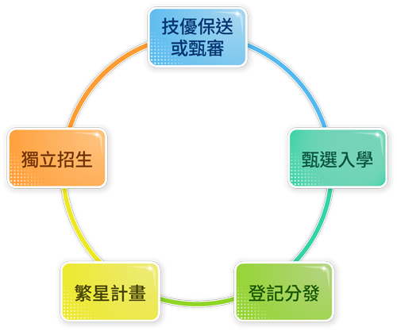

未來進路
升學Further education
一、升學管道

分為技優保送或甄審、甄選入學、登記分發、繁星計畫及獨立招生，共六種管道。學生若是不想循傳統考試升學之路，可以選擇參加全國技能競賽，或者成為國際技能競賽的國手，進而取得技優保送或甄審的資格。
二、專業或相關科系延伸
資料處理科學生若想繼續學習資料處理的專業技術，可以選擇就讀資訊管理系或資訊工程系，也有學生選讀商業與管理學門其他相關科系。除此之外，也有學生轉往設計領域繼續深造。大專院校的相關科系，整理如下：
| 學門 |
學類 |
科系名稱 |
| 工程學門 |
電資工程學類 |
資訊工程學系 |
| 商業與管理學門 |
其他商業及管理學類 |
資訊管理與傳播系 |
| 會計學類 |
會計資訊學系 |
| 企業管理學類 |
企業管理學系 |
| 設計學門 |
視覺傳達設計學類 |
數位媒體學系 |
就業Employment
學生畢業後可直接進入就業市場，其大多任職於各企業單位的資訊部門，從事資料登錄員、文書處理員及文書排版員等職務。
繼續升學者，由於繼續深造資訊相關技能，就業面向以資訊軟體產業為主，可擔任程式設計師、網頁設計師、網路管理工程師、程式修復員等職務。由於各行業對資訊人員的需求增加，畢業生投入金融業、電子業及文教業的比例也逐漸升高。
代表人物：
臺灣IBM總經理－于弘鼎
于弘鼎畢業於東吳大學電子計算機應用科學系，於1981年加入臺灣IBM公司。于弘鼎具有穩定軍心、打長線戰的特質，正是企業面對金融海嘯尋求轉型時需要的專業經理人。他帶領著臺灣IBM朝四大方向努力：成為科技服務顧問公司、分析商業活動資料並預測外來趨勢、加強雲端運算所提供的服務及以科技力量協助解決都市問題。
宇軒數位創辦人－李昆謀
李昆謀畢業於臺大資訊管理系，他秉持鍥而不捨的精神，不論投資成功與否，創建許多網站。搭著iPhone風潮，李昆謀與友人看見其中商機，應用過去所學知識、技能，積極開發各種APP程式，成功地為他締造創業佳績與打進國際市場。（註：App是英文application的縮寫，指的是專為手機或行動載具所撰寫的小程式。）